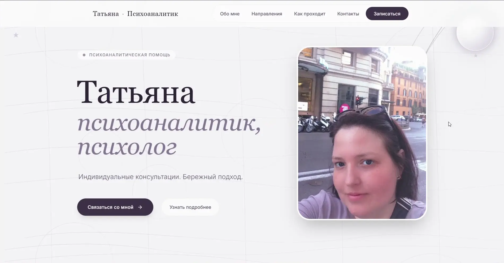
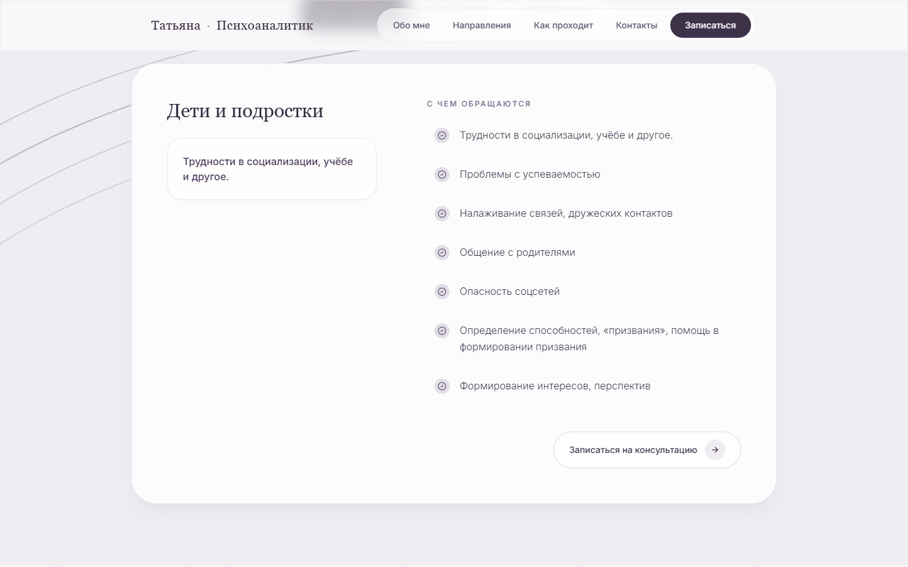
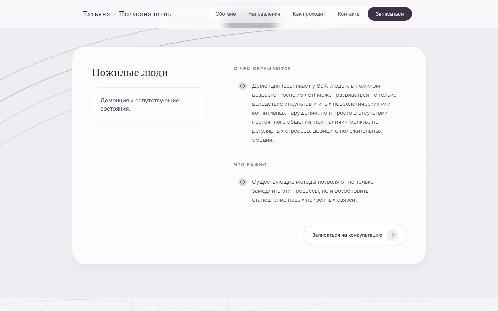
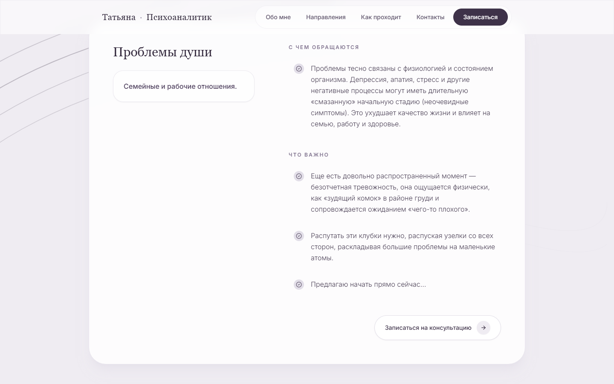

САЙТ ПСИХОАНАЛИТИКАORIGINAL INTERFACE
Татьяна

Исходный светлый дизайн и авторская запись сохранены. Кейс не подменяет сайт новым шаблоном.
Знакомство со специалистом без лишнего шума: человек, направления, формат и контакт.
АВТОРСКАЯ МОБИЛЬНАЯ ЗАПИСЬ
Лично.
Спокойно.
Рядом.
Телефонный интерфейс, меню и исходный адрес сохранены из предоставленной записи.
ОСНОВНЫЕ РАЗДЕЛЫ
Одна интонация.
Три направления.



ЛОКАЛЬНАЯ ПРОВЕРКА